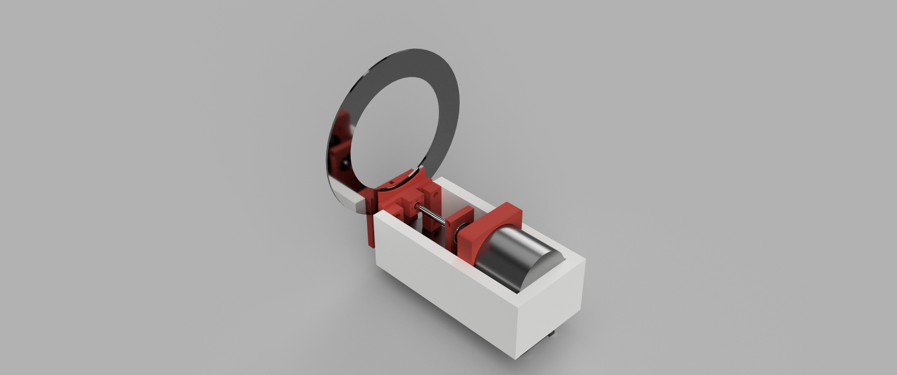

Brake By Wire is my completly electrical brake system prototype developed as a for my Final Year Thesis Project.
This thesis outlines the procedure in the development, simulation and validation of an electromechanical braking (EMB) calliper actuation sub-system. The EMB demonstrates the fundamental mechanical and electronic principles of the larger, innovative Brake-by- Wire (BBW) technology are feasible. The expanding necessity for electronically controlled braking apparent with motor vehicle trends moving towards autonomous driving and greater integration of vehicle safety systems. This makes EMB a logical step forward due to its potential for faster response times and simpler vehicle integration compared to current electro-hydraulic braking (EHB) systems. The project focuses on a simple lead screw and geared motor EMB design, inherently making the EMB more controllable as well as reliable. A mathematical system model was derived to relate required vehicle braking force to motor torque and speed, leading to the selection of a motor and the removal of the gearbox to improve system efficiency. The physical prototype was scaled down to operate in a range of 3-5 KN but was ultimately limited to 700N during testing due to structural constraints of the temporary housing. The system utilizes an ESP32 micro controller to interface a compression load cell (for force feedback) and a Brush less Direct Current (BLDC) motor driver (for position control) with a Matlab Simulink PI controller. Open-loop testing revealed the system’s stiffness and damping parameters were non-linear with respect to motor rotation, particularly at low-force values before full brake pad contact. Closed-loop testing tuned for the 300-700 N range which showed strong performance. The 300N value represents the optimum performance point within the targeted tuning range. At 300N, the system responded in 170ms with no overshoot, settled in 800ms, achieved an average tracking accuracy of 96.56%, had a closed-loop bandwidth of about 4.4rad/s (0.71Hz) consistent with PI control, and showed reliable, repeatable behaviour. The project provides insight into the dynamics and feasibility of developing such a system, demonstrating that a PI-controlled EMB prototype can achieve response times competitive with or better than existing EHB systems. However it highlights the need for more robust mechanical design and advanced control strategies to achieve full scale deployment of Brake-by-Wire (BBW) technology.